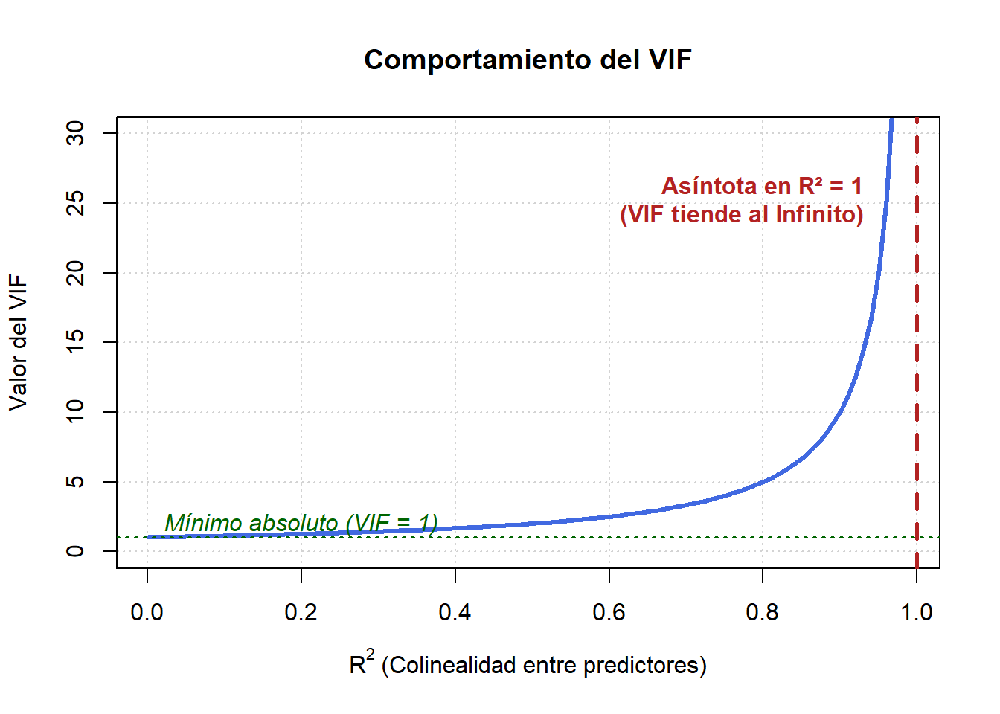

3 Multicolinealidad
3.1 Multicolinealidad Perfecta
La multicolinealidad perfecta es cuando tenemos dentro de un modelo, una variable regresora que se puede escribir como combinación lineal de otra. Sea el siguiente modelo:
\[Y = \beta_0 + \beta_1X_1 + \beta_2X_2 + \varepsilon\]
Donde \(X_2 = 2X_1\), por ejemplo. Si reemplazamos esa especificación para $X_24 tendríamos que:
\[Y = \beta_0 + \beta_1X_1 + \beta_2 \cdot 2X_1 + \varepsilon\]
Y luego:
\[Y = \beta_0 + [\beta_1 + 2\beta_2]X_1 + \varepsilon\]
Y a esta combinación lineal de betas que está multiplicando a \(X_1\) le llamaremos \(\beta^*\), tal que:
\[Y = \beta_0 + \beta^*X_1 + \varepsilon\]
Matemáticamente lo que esta ocurriendo es que, al ser \(X_2\) combinación lineal de \(X_1\) (devolviéndonos al estimador del vector de parámetros) incurriríamos en el siguiente problema:
\[\hat{\beta} = (X^TX)^{-1}X^TY\]
Como tenemos dos columnas que son combinaciones lineales, el determinante de la matriz \((X^TX) = 0\), por lo tanto la inversa de dicha matriz no está definida. De otra manera, cuando hay multicolinealidad perfecta, la correlación entre una y otra o varias variables es 1.
3.2 Multicolinealidad No Perfecta
En este caso cuando existe multicolinealidad no perfecta, a diferencia del caso anterior, observamos que existe una fuerte correlación entre ciertas variables, pero no perfecta.
Esto genera distintas cosas, tales como:
- Varianza Alta: Los coeficientes cambian sustancialmente ante mínimos cambios en los datos.
- Errores Estándar Altos: Los intervalos de confianza se hacen más amplios, lo cual dificulta rechazar la hipótesis nula, es decir, pierde significancia el coeficiente.
- Dificultad para interpretar: Resulta complejo aislar el efecto individual de cada coeficiente.
3.3 Factor Inflacionario de la Varianza
Una de las formas de detectar multicolinealidad entre variables se puede realizar a través del Factor Inflacionario de la Varianza (VIF). Por definición, el factor inflacionario de la varianza mide cuanto aumenta la varianza de un coeficiente debido a la correlación entre las variables regresoras. Por fórmula cuando hay únicamente dos regresores:
\[VIF = \frac{1}{Corr^2(X_1,X_2)}\] Por el contrario, si tuviésemos más regresoras la fórmula corresponde a:
\[VIF = \frac{1}{1-R^2_j}\] Donde \(R^2_j\) corresponde al R-cuadrado de una regresión auxiliar que resulta de regresionar la variable \(X_j\) con los demás regresores tal que:
\[X_j = \gamma_0 + \gamma_1X_1 + \gamma_2X_2 + ... + \gamma_nX_n + u\] Si analizamos esto, podemos ver que si los demás regresores explican completamente la variable, es decir \(R^2_j = 1\), entonces \(VIF \rightarrow \infty\), y por otra parte si los demás regresores no explican nada de la variable, es decir, \(R^2_j = 0\), entonces \(VIF = 0\), por lo tanto no existe multicolinealidad. Como el \(R^2 \in \{0,1\}\) entonces el dominio del \(VIF\) es \(Dom: \{0,1\}\) y el \(VIF\) puede tomar valores en el intervalo \([0,\infty[\).
Gráficamente el \(VIF\) se ve de la siguiente manera:

Una ‘’solución’’ a la multicolinealidad es eliminar la variable que genera multicolinealidad, con el riesgo de tener sesgo por variable omitida. En teoría con esto tenemos un trade-off entre multicolinealidad y sesgo, el cual depende necesariamente de la pregunta de investigación o propósito de realizar el modelo.